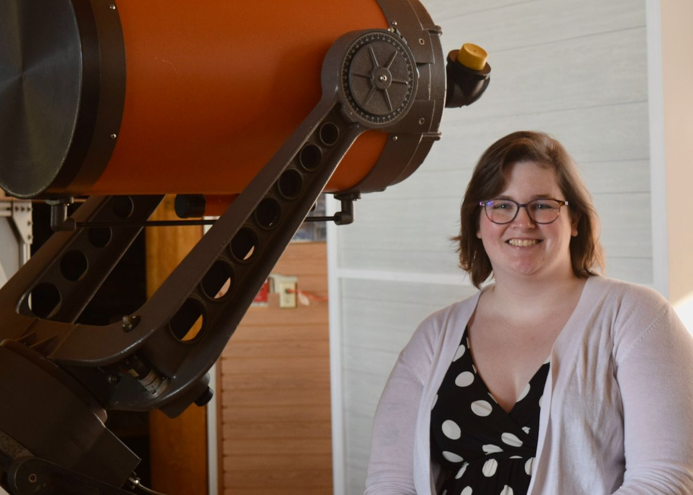
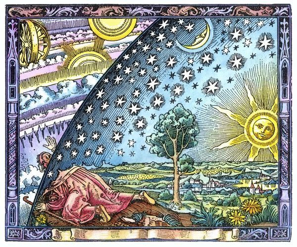
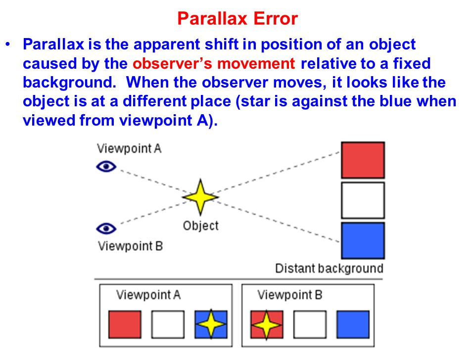
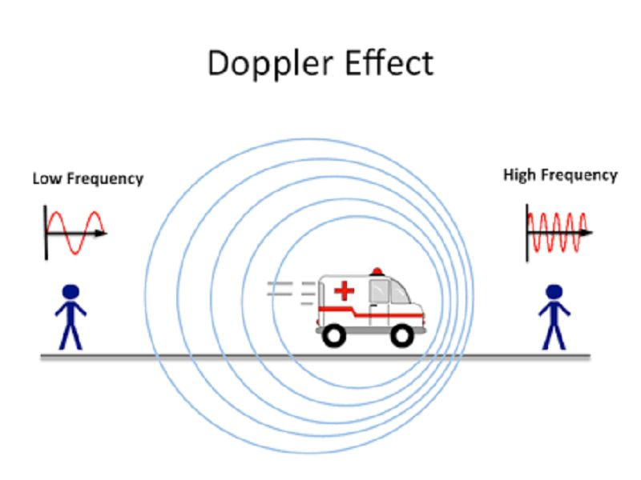
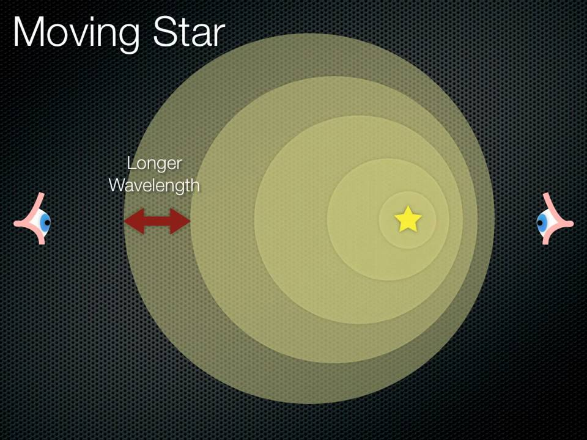
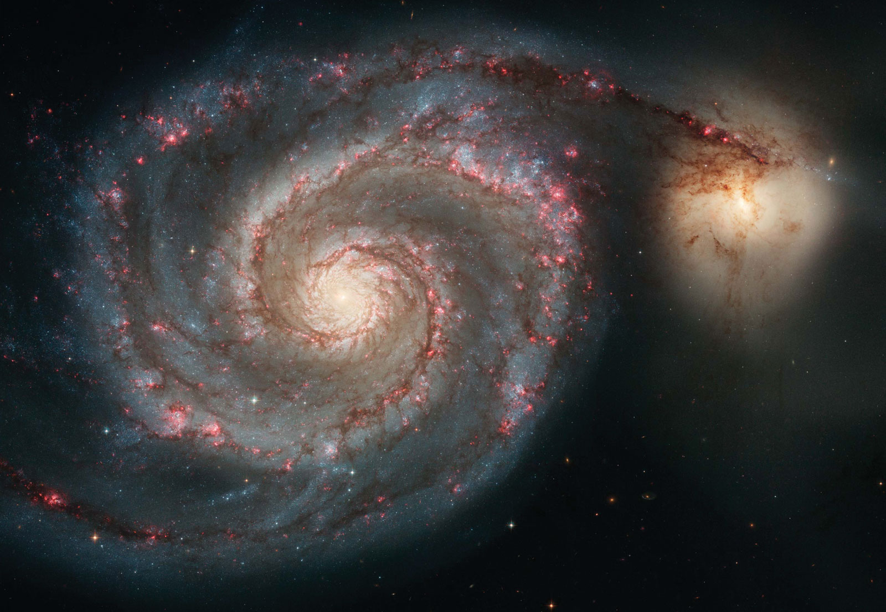
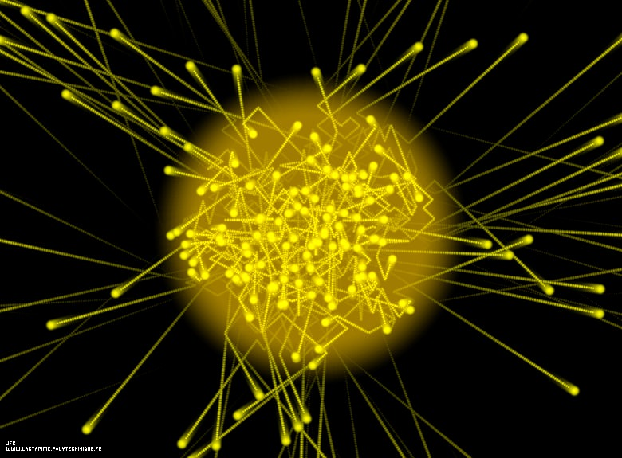
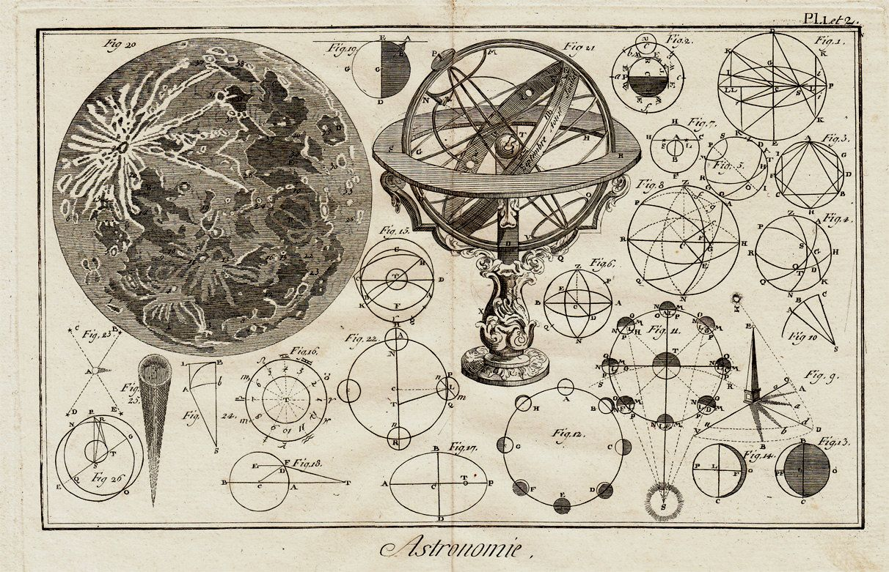
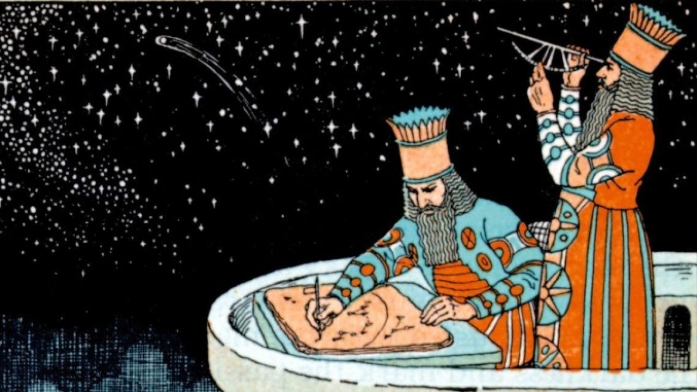

Education:
M.S. in Physics and Astronomy at University of Missouri,
B.S. in Physics at University of Wisconsin - Stevens Point
Research Interests:
Exoplanets, Extragalactic astronomy, Transients, Young Stellar Objects
Sarah Parker graduated with a M.S. in Physics and Astronomy at the University of Missouri.
Sarah’s research was in the field of extragalactic astronomy.
Before recieving her M.S. at Mizzou, Sarah graduated from the University of Wisconsin-Stevens Point
with a B.S. in Physics in 2018. There, she did research on the environmental effects on elliptical
and lenticular galaxies with Dr. Adriana Durbala.
During the summer of 2017, Sarah was a research student with Dr. Peter Brown at Texas A&M. There,
she worked in python to create a template for the light curves of type Ia supernovae.
Sarah has been on three observing runs to Kitt Peak National Observatory, where she used the 0.9 m
WIYN telescope. She has also been on one observing run to McDonald Observatory, where she had access
to the 0.8 m and 0.9 m telescopes. Sarah has also attended an ALFALFA undergraduate workshop at Green
Bank Observatory.

Since graduating from Mizzou, Sarah has stayed active in the astronomical community by working at the
Horwitz-DeRemer Planetarium, the Adler Planetarium, and volunteering at Geneva Lake Astrophysics and
STEAM (GLAS).
Research
NOTE: Sarah currently has one publication in Astronomical Society of the Pacific Conference Series (ASPCS),
but hopes to publish more in the near future.
Here is some background on me: I have two degrees in physics, with a research background in astronomy.
I am extremely passionate about space, science, and education. After graduating with my M.S. in Physics
and Astronomy during the COVID-19 pandemic, I was hard pressed to find a job in my field. In this time,
I reflected on my past experiences, and thought of a plan to move forward. During my career I had been a
tutor, teaching assistant, and planetarium lecturer. It became clear to me that not only was I passionate
about physics and astronomy, but about education too! I had done it informally for the better part of a
decade. So, I did what any sane (and completely non-masochistic) person would do and enroll in college
again for the third time—this time at the University of Wisconsin-Milwaukee (UWM).
This time around, I am enrolled in the MACSTEP Program at UWM to get my teaching certification in Physics,
as well as a Master’s in Curriculum & Instruction. Starting in fall of 2021, I will be teaching physics and
precalculus at a high school in Milwaukee. In this year, I hope to learn how to be the best teacher I
possibly can be, and to be a positive influence in the lives of my students.
One of my favorite physics websites is PhET by the University of Colorado
Boulder. They have simulations for many different physics concepts, which will be a great tool to help my
students visualize these phenomena. I look forward to incorporating it into my classroom!
"I know that I know nothing." The Socratic paradox. The more educated I become, the less I seem to know about… well, anything.
When I did astronomy research, it seemed that the further I dug the more questions I unveiled. What are the rules and mechanisms
that govern our Earth, our Solar System, our Galaxy, our Universe? Why do astronomical objects act the way they do? Of course,
the classic: How did we (humans) get here on Earth!? What differentiates us from the other objects in our Solar System, or our
Sun from the other Stars in our Galaxy? Could there even be life out there that we do not know about? So many questions, yet so few answers.
In this blog, I will focus on the question “What are the rules and mechanisms that govern our Universe?” I will have hyperlinks
sporadically throughout this blog for further reading on these topics in case they are of interest to you. These are links that
I handpicked, which helped me research this topic and gain a better understanding.
Well, on a small scale, we know that the Moon goes around, or orbits, the Earth. And the Earth orbits the Sun, of course.
Seems simple to us, right? But it wasn’t always that obvious. There is a long and complicated
history of orbital mechanics
dating back to ancient civilizations. Of course, when they looked up at the sky, they saw that the Sun, the Moon, and stars
all go from East to West. It follows logic that day after day all these objects move around us, and we are the center.
Sometimes though, some of the planets would move backwards for a while, and then return to the normal path. Why!? Well as
mathematics advanced, people realized that the Earth wasn’t the center! And this motion is called apparent retrograde motion.
This apparent motion is actually caused by the Sun being the center of the Solar System!

Now we know how the Solar System operates- but what about beyond that? All the stars are on the firmament,
right? WRONG! We are no longer in the 4th century and know that stars MOVE and are at varied DISTANCES!
But… how did we figure this out? Well, a couple ways: First, with parallax. Second, with Doppler shift.
First let’s discuss parallax. You can see this in your day-to-day life. Look at an object across the
room from you. Now, put your index finger up in front of the object. Close your left eye, then close
your right eye. Your finger should change position in relation to further object. We can see this
with the stars, too! As the Earth moves around the sun, it gives us different vantage points in space,
much like how each of our eyes have different vantage points. We can then see closer stars (or our finger)
move in relation to more distant stars (our object) as the Earth’s moves along the Sun’s orbit (or as we
change which eye we look out of). This is how astronomers realized that stars are not actually just on a
dome, or firmament.

Next, let’s discuss Doppler shift. Have you ever heard a car coming toward you, and the tone of the
car was higher as it moved toward you and lower as it moved away from you? This happens because the
sound gets stretched and squished due to the movement of car—or in other words, the wavelength of
the sound changes.

Well, light does this too! This phenomenon is called Doppler Shift. We can tell
how fast a star or galaxy is moving towards or away from us using this technique. The weird thing
is that we find that most objects are moving away from us (or redshifted) as opposed to towards
us (or blueshifted). WHY!?

Well, we’re not quite sure why. ¯\_(ツ)_/¯ But we call this dark energy. We have the capability to
tell that everything in the Universe is expanding and everything appears to be moving away from us.
But dark energy is a topic that even stumps my professors and colleagues in astronomy. We know it
exists, but we have no clue why it happens. There are even some parts of the Universe that seem to
be more populated with galaxies (like the Great Attractor) than others. But in all honesty, we have
no freaking clue as to why. I can only hope that this question will be answered in my lifetime
(perhaps by one of my students), but for now, it is a mystery.
So despite knowing more about astronomy than the average person, I still am in the dark on many
things, such as dark energy and it’s implications on the end of our Universe. I know a lot about
the history of orbital mechanics, I know how to calculate different variables regarding orbits, and
generally know how things work on a small scale. While I poke fun at ancient and early astronomers
in this article, we are no better. They did the best with the knowledge and observations that they
had, just like we are doing. And yet, we ultimately have the same question: What are the rules and
mechanisms that govern our Universe?
As you may have figured out by now, I’m a nerd. A nerd who is passionate about space. More specifically:
extragalactic astronomy. What is extragalactic astronomy, you say? Well, I’m glad you asked!
Extragalactic astronomy is the study of galaxies outside of our home galaxy, the Milky Way. I
spent most of my higher education studying galaxies, and I am here to share the love!

A very important and often overlooked part of education is visualization. Luckily for me, up until 2016
all astronomical observations were taken of photons—those little particles that fly around and
give us light and the ability to see. So astronomy is a very visual field. But you know what I
haven’t found to be very visual? History. I had never really learned much about the history
science or astronomy in school, but as I learned more on my own, I found it really interesting
and it’s something that I wanted to share with my students.

As I thought about writing this blog, I thought of how I could incorporate history into it. History of
astronomy? No, too broad. History of the Solar System? A little better, but not quite what I
was looking for. Finally, I settled on the area in which my expertise resides: extragalactic
astronomy. Even within this small subfield of astronomy there is a lot of interesting history
(and drama)!

Of course, I could just tell you all about the discovery of galaxies—but that would be no fun. Instead,
I created an interactive timeline to help you see what happened throughout this history. As a
child (and even now) I had a hard time memorizing dates for history class. The great thing about
this timeline is that it allows you to swipe through each event and see when they happened with
respect to each other. This allows you to physically see what came first without the added step
of remembering dates.
Additionally, I tried to find images to represent both the people and their findings. I find that I
often remember things better when I have a picture associated with them. I can’t speak for
anyone else, but I find that after reading a big block of text with no pictures, I end up
retaining none of what I read. On the other hand, when pictures and visuals are involved, my brain
has something to reference and has a better time retaining the information. I chose these particular
images for this timeline because it is interesting for me to see what telescopes these people worked
on, what their original drawings looked like, or even what clothes they were wearing. It really
immerses you in the history and helps you recognize what the time period was like, what tools they
had at their disposal, and how quickly advancement happened.

I find that this visual timeline helps to draw focus to past errors in scientific thought and how much
progress we have made. As someone who has participated in modern extragalactic research, it begs the
question: what errors in thought exist today? Once again, a question I am not able to answer—and
perhaps no one will be able to in our lifetime. This particular way that I have displayed the history
of galaxy discovery really encourages critical thinking and retrospection.
Lastly, I find that this way of presenting information is more accessible. It contains an interactive
portion with the swiping, a visual portion with the images, dates for people who remember numbers well,
and text for people who enjoy reading. It caters to a larger group of people. Scientific papers are
very verbose, full of jargon, and void of images. If the scientific community shifted to a more visual
way of communicating their findings, they would most likely reach a broader audience and have a higher
impact. On the other hand, most textbooks are created for college level students. If textbooks
presented their information in a more creative way, it would undoubtedly change education in a
positive way and become more accessible for a younger audience. So my challenge to any scientists,
textbook writers, or teachers out there: how can you make your information more accessible?
I think that creating this timeline was very challenging but also quite fun. Had history been presented
this way when I was in school, I may have paid a bit more attention. I can only hope that my students
will feel the same way. Either way, I know that I will be creating more visuals in the future in an
effort to make scientific reading accessible.
Blog #4: Disciplinary Text Set
July 27, 2021
“Well Sarah, why should we study astronomy?” Thank you for asking, that is a wonderful question! In today’s blog I will attempt to explain why astronomy is important and what benefits we receive from studying astronomy. I have gathered together some materials which I think support and supplement my claims well.
In general, I think it is important for students to know their subject matter and *why* they are learning it. In one of my college astronomy courses, I learned about some of the common modern technology that exists because of astronomy. I thought this concept was amazing and relevant society today, so I decided to share with you (and with my future students).
Text 1
My first resource is this video by Paul M. Sutter. In this video, Sutter describes astronomy from the perspective of humanity. He explains that while a bunch of sciences are directly helpful to humanity in the sense of medicine and technology, astronomy provides enrichment. Sutter goes on to say that astronomy was one of the four original liberating arts. I like that Sutter takes this approach to explaining astronomy, because something doesn’t need to be life changing to be considered important. Having worked at two planetariums, I can confirm that many people enjoy learning about space and astronomy and all of the patterns of the universe. People find it enriching, and that alone makes it important.
As far as complexity goes, I think this video would be great for high school or college aged students. This resource may be interesting for these groups because it describes astronomy from the perspective of humanity, which is a very unique perspective.
Here are some vocabulary that would be ideal to know before watching this video: astronomy, benefit, humanity, nature, enrich, variety, expression, liberating
A question to consider while watching: What sort of activities or knowledge bring you enrichment?
Text 2
For my second text, I chose ‘Astronomy in Everyday Life’ from the International Astronomical Union Website. This article describes technology created for astronomy that has been adapted to different sectors, such as industry, aerospace, energy, and medicine. While the last resource described a more subjective way to view astronomy, this article showcases some of the objective benefits and practical uses of astronomy.
This text is a bit more complex, so I would probably recommend it for a college age student as is. With modification, some of the information would be good for high schoolers as well. This resource is interesting because it is relatable to any students entering these sectors after school.
Here are some vocabulary that would be ideal to know before reading this article: sector, technology, development, tangible, pursue, software
A question to consider while reading: which of these technologies have you used, and which of these technologies have you benefitted from either directly or indirectly?
Text 3
For my third text, I chose a Travel and Leisure article. This article focuses more on NASA inventions that have improved our life on Earth, even though that wasn’t the initial intended purpose. The technologies they list vary from ear thermometers to hurricane tracking!
This text is more simple and is supplemented with visuals, so I would say it is a good read for middle of high school students. This text really displays these technologies in a simple way that is enjoyable to read.
Here are some vocabulary that would be ideal to know before reading this article: communications, monitoring, aural, fibrous, algae, grooves, nutrition
A question to consider while reading: Which of these technologies are you surprised are on the list?
Text 4
One of my favorite of these articles is ‘How does astronomy affect your day-to-day life?’ from Astronomy Magazine. The reason I like this article is it talks a little bit more about science content than some of the others.
I think this text would be suitable for high school students. I believe other people would like this article because it is a quick article that breaks down the science and history of these technologies quite nicely.
Here are some vocabulary that would be ideal to know before reading this article: civilization, observatory, nuclear reactions, ionosphere, radar, viscoelastic, absorption
A question to consider while reading: How many people do you think are affected by the existence of these technologies?
Text 5
The next article I have chosen is a column about Astronomy in Everyday Life. The reason I like this text is because it clearly lays out many of the uses for astronomy in an organized manner. This article bridges the gap of the historical/humanity perspective of astronomy with the modern technology/medicine perspective.
This paper is definitely more complex, but I think with some front loading strategies and some careful dissection and preparation of the paper, that I could have my high school classes read this. I think this paper is a nice catch-all for anyone looking for a general overview of the uses and importance of astronomy.
Here are some vocabulary that would be ideal to know before reading this article: tangible, transcending, prolong, application, pharmaceutical, breadth
A question to consider while reading: how might technology evolve even further from astronomical discoveries?
Text 6
The last article that I chose is Astronomy in our Daily Lives from the government of Canada website. The reason I like this article is that it splits up the uses of these technologies by sector, and presents the information in bite-sized pieces.
This paper would be appropriate for middle to high school students. I think anyone interested in learning more about the technology in different sectors would benefit greatly from reading this article.
Here are some vocabulary that would be ideal to know before reading this article: integrated, gaseous, radiation, protocol, immobile, scattered
As for questions to ponder—I recommend looking at the ‘Inspiring the Next Generation of Scientists’ section of this article, because it provides four thought-provoking questions to the reader.
Sarah began working in the planetarium industry in 2014 during her freshman year of college.
Since then, she has worked at the Allen F. Blocher Planetarium in Stevens Point, WI, the
Horwitz-DeRemer Planetarium in Waukesha, WI, the
Adler Planetarium in Chicago, IL, and has
volunteered at the Madison Metropolitan School District Planetarium in Madison, WI. On occasion,
she has also volunteered with Geneva Lake Astrophysics and STEAM, running their portable dome for
outreach events. In this time, Sarah has given many presentations and designed visuals with
Digistar 6 software, which have been used at planetariums across the world. Please see samples
of her work below.